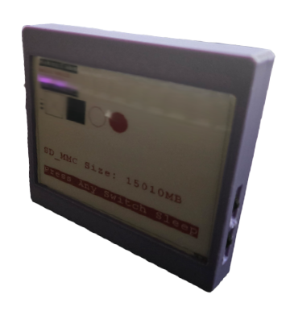
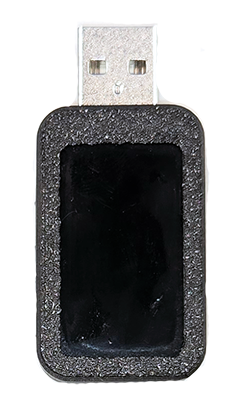
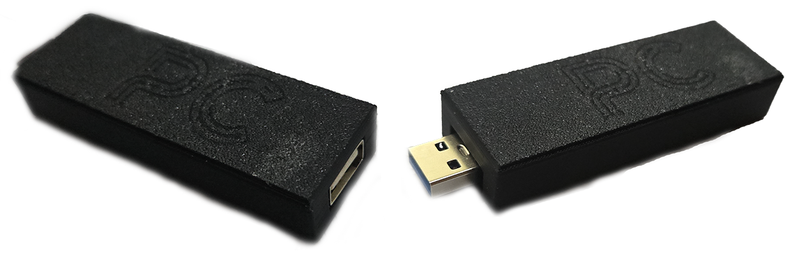
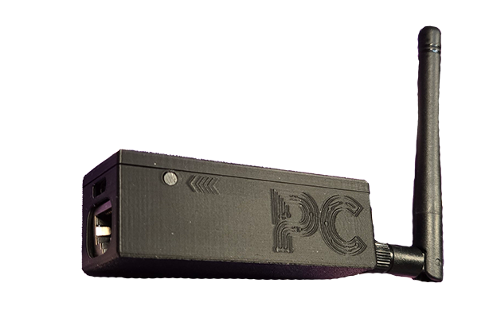
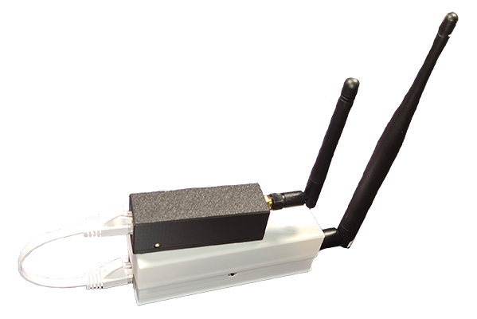

Professional Penetration Testing Devices
Advanced hardware solutions for authorized security assessments and red team operations
Advanced Security Testing Hardware
Our specialized penetration testing devices provide security professionals with powerful tools for comprehensive security assessments. These devices enable real-world attack simulations, network monitoring, credential harvesting, and infrastructure testing in controlled, authorized environments.
Each device is designed for professional use in authorized penetration testing engagements, security audits, and red team exercises. They combine cutting-edge technology with practical functionality to help identify vulnerabilities before malicious actors can exploit them.
Armed by an Expert, Deployed by Anyone
The device holds the method, so the person on site does not need to be the expert. Results are identical no matter who plugged it in, and one specialist can run several engagements in parallel.
Arm
A security expert loads the test plan onto the device before anyone travels. Devices are armed per engagement and reused.
Plug In
Any available person connects the device: a field technician, a junior, whoever is free. No laptop, no tools; a phone is enough.
Control
The expert drives the engagement live from a browser: any command with real-time output, in the room over the device's hotspot or remotely through the fleet.
Report
All deployed devices sync their logs to one collector, and the expert generates the severity-rated, ATT&CK-mapped client report remotely. Expert time goes to arming and review only.
Beyond Keystroke Injection
A basic Rubber Ducky-class device types one preloaded script and stops there: one payload, one direction, no feedback, no result. The USB Drive Module starts with the same keyboard entry. The difference is everything that happens after.
| Aspect | Basic Keystroke Injection (Rubber Ducky class) | USB Drive Module |
|---|---|---|
| Entry | Types one preloaded script | Detects Windows, macOS or Linux, runs the matching payload and opens a command channel |
| Feedback | None. The operator is blind | Live two-way control: any command, output, files, screenshots |
| Network testing | Not available | Credential traps, impostor responders and traffic interception via the paired Network Module |
| Control after plug-in | None | Phone browser over the device's own hotspot, or remotely through the fleet |
| Multiple devices | Each unit is standalone | Pairing, command relay, log sync: one merged site report |
| Monitoring | Not available | Passive presence: who and what is nearby, encrypted and pseudonymized |
| Result | Nothing is recorded | Severity-rated, MITRE ATT&CK-mapped report, as PDF, JSON or CSV |
| Languages | Payload dependent | 19 keyboard layouts built in |
Device Lineup
Choose the right tool for your security assessment needs





Command Module
The central hub for coordinating all devices provides real-time monitoring, centralized log collection, and simplified attack orchestration across your entire testing infrastructure.
Key Capabilities:
- Device Discovery & Swarm Capabilities Automatically detect and receive status updates from all deployed devices within Wi-Fi range
- Credential Monitoring: Real-time viewing of discovered credentials from man-in-the-middle attacks across all connected devices
- Centralized Log Synchronization: Aggregate and synchronize activity logs from all devices for comprehensive reporting
- Attack Orchestration: Select and remotely execute coordinated attacks across multiple devices simultaneously
- Web-Based Interface: Intuitive dashboard for monitoring operations and reviewing collected intelligence
- Encrypted Communications: All device-to-command communications use encrypted channels for operational security
| Communication Range | Up to 100m (standard Wi-Fi) |
| Device Capacity | Up to 50 simultaneous devices |
| Power Requirements | USB-C powered or battery pack |
| Storage | 32GB onboard storage for logs |
USB Drive Module
A pocket-sized device for authorized security assessments. Plug it into a computer and it appears as a standard keyboard, detects Windows, macOS or Linux on its own, runs the matching payload, and opens a discreet command channel that gives the operator control of the machine. The typing is only the first step. What happens after sets this module apart.
Control happens from a phone or laptop browser over the device's own Wi-Fi hotspot. No app, no internet connection required. Every engagement ends with a severity-rated, MITRE ATT&CK-mapped report, ready as PDF, JSON or CSV.
Core Capabilities:
- Automatic OS Detection & Payload Matching: Identifies Windows, macOS or Linux on plug-in and runs the payload prepared for that system, with 19 keyboard layouts built in
- Live Command & Control: Run any command and read the output in real time, browse and copy files, and capture screenshots through a discreet channel: full two-way control, not one-way typing
- One-Command Pentest Survey: A single command collects the standard opening checklist: domain membership, domain controller, admin rights, password policy, security software, disk encryption, patches, firewall, shared folders, mapped drives and open ports
- Control From the Room: The device hosts its own Wi-Fi hotspot. A connected phone opens the control interface with status, live logs, a terminal, screenshots and one-click launch of prepared tests; scripts are stored and edited on the device itself
- Operational Discipline: Acts only when the machine is unlocked and in use, hides its windows, removes its traces and reconnects automatically after interruptions
- Fleet Operations: Pairs with other modules to relay commands and synchronize logs through the Command Module, so multiple devices on one site produce a single merged report
- Passive Presence Monitoring: Listens to nearby Wi-Fi and Bluetooth signals and classifies devices and people as new, known, regular or returning; data is encrypted on the device, stored under pseudonyms and can be wiped with one command
- Evidence-Grade Reporting: One command generates the client report (executive summary, severity per event, timeline, plain-language findings, MITRE ATT&CK mapping) with automated PDF, JSON and CSV exports
| OS Compatibility | Windows / macOS / Linux (auto-detected) |
| Keyboard Layouts | 19 built-in layouts |
| Connectivity | USB (bus-powered) / self-hosted Wi-Fi hotspot |
| Control Interface | Phone or laptop browser. No app or internet |
| Reporting | PDF / JSON / CSV, severity-rated, MITRE ATT&CK-mapped |
| Power Source | USB bus powered |
Keyboard Pass-Through Module
An advanced keyboard logger that sits between the keyboard and computer, capturing all keystrokes while maintaining normal keyboard functionality. Combines all USB Module features with keystroke recording.
Advanced Capabilities:
- Transparent Pass-Through: No detectable latency or impact on normal keyboard operation
- Complete Keystroke Capture: Record all key presses including passwords, commands, and sensitive data entry
- Wireless Extraction: Retrieve captured keystroke logs remotely when device is in Wi-Fi range
- All USB Features Included: Full functionality of the USB Drive Module plus keystroke logging
- Persistent Monitoring: Continues recording even when not connected to command infrastructure
- Hardware-Based Capture: Operating system independent, works regardless of security software
| Interface | USB keyboard pass-through |
| Storage Capacity | 2GB keystroke buffer |
| Detection Risk | Very low (hardware-based) |
Network Module
A sophisticated network tap and analysis device that provides deep visibility into network communications. Connects to the LAN network and instantly executes all man-in-the-middle attacks available in the responder tool.
Network Testing Capabilities:
- Network Port Sniffer: Immediate detection of active network ports and real-time traffic analysis
- Asset Discovery: Build comprehensive inventory of network devices, services, and communications patterns
- Protocol Analysis: Deep packet inspection across common protocols (HTTP, HTTPS, SMB, FTP, etc.)
- Automated MITM Attacks: Execute man-in-the-middle attacks to collect network credentials and authentication hashes
- Credential Harvesting: Capture cleartext credentials and password hashes from network traffic
- Data Relay: Backup network connection for exfiltrating data from other deployed devices
- Flexible Power Options: Powered via PoE (Power over Ethernet) or internal battery for temporary deployments
| Network Interface | Gigabit Ethernet (pass-through) |
| Power Options | PoE / USB-C / Battery (4-8 hours) |
| Operating Modes | Passive monitoring / Active MITM |
| Capture Rate | Up to 1 Gbps line rate |
Long Distance Module
The premium solution for large-scale penetration testing engagements that require an extended command-and-control range. The device acts as an invisible cable, connecting your computer from across the street to the internal network.
Extended Capabilities:
- All Network Module Features: Complete network analysis, MITM attacks, and monitoring capabilities
- Long-Range Wi-Fi: Wi-Fi HaLow (802.11ah) technology for extended range communications
- Command & Control Range: Control devices from up to 1km away (line of sight), 300-500m in urban environments
- Low-Power Operation: Extended battery life due to efficient 802.11ah protocol
- Penetration Through Obstacles: Better building and obstacle penetration compared to standard Wi-Fi
- Multi-Device Coordination: Serve as a relay point for extending range to other deployed devices
- Covert Operations: Ideal for physical penetration testing where remote monitoring is essential
| Wi-Fi Protocol | 802.11ah (HaLow) + standard Wi-Fi |
| Range (Line of Sight) | Up to 1000m |
| Range (Urban) | 300-500m |
| Battery Life | 12-24 hours (monitoring mode) |
| Network Features | All Network Module capabilities |
Device Comparison
Choose the right combination for your penetration testing needs
| Feature | Command Module | USB Drive | Keyboard Module | Network Module | Long Distance |
|---|---|---|---|---|---|
| Device Management | ✓ | — | — | — | — |
| Endpoint Monitoring | — | ✓ | ✓ | — | — |
| Keystroke Logging | — | — | ✓ | — | — |
| Network Analysis | — | — | — | ✓ | ✓ |
| MITM Attacks | — | — | — | ✓ | ✓ |
| Long-Range Control | — | — | — | — | ✓ |
| Typical Use Case | Central Hub | Endpoint Takeover & C2 | Password Capture | Network Testing | Remote Ops |
Common Deployment Scenarios
Physical Penetration Test
Deploy Keyboard Pass-Through and Network Modules in target facility to test physical security controls and data exfiltration paths. Command Module coordinates from nearby location.
Credential Harvesting Assessment
Use Network Module with automated MITM capabilities to test network segmentation and credential security. Captures weak authentication protocols and cleartext passwords.
Red Team Operation
Long Distance Module enables remote command and control from up to 1km away. Ideal for covert testing scenarios where proximity to target must be minimized.
Endpoint Security Testing
USB Drive Module tests endpoint detection and response (EDR) solutions, USB device policies, and data loss prevention (DLP) controls.
Network Asset Discovery
Network Module provides passive reconnaissance to map internal network architecture, identify active services, and discover shadow IT assets.
Compliance Validation
Test PCI DSS network segmentation, HIPAA encryption requirements, and other compliance controls using Network Module capabilities.
Request Device Information
Interested in using our penetration testing devices for your security assessment? Contact us to discuss your requirements, pricing, and rental options.
Contact Sales